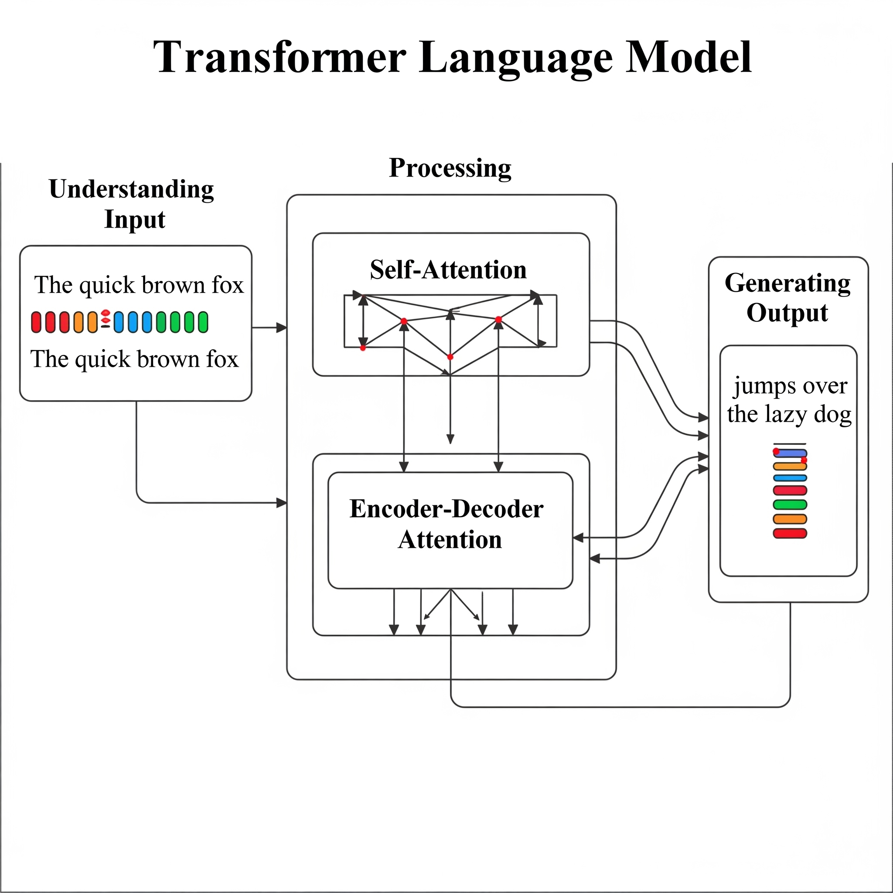

Possibilities and Pitfalls of Large Language Models.

Introduction
This post was last updated on 2025-08-07
Large Language Models (LLMs) represent a class of artificial intelligence systems that have fundamentally transformed natural language processing and generation. These neural networks, trained on vast corpora of text data, demonstrate remarkable capabilities in mimicking the understanding context, generating coherent(ish) responses, and performing complex reasoning tasks across diverse domains.
At their core, most modern LLMs are built upon the transformer architecture, introduced in the seminal paper “Attention Is All You Need” by Vaswani et al. in 2017. The transformer’s key innovation lies in its self-attention mechanism, which allows the model to weigh the importance of different words in a sequence when processing each token. This parallel processing capability offers significant computational advantages over previous sequential architectures like RNNs and LSTMs.
 (Generated by Gemini)
The transformer consists of encoder and decoder blocks, each containing multi-head self-attention layers and feed-forward networks. However, most contemporary LLMs adopt variations of this base architecture, leading to distinct model families with different strengths and applications.
LLM development typically follows a multi-stage process. Pre-training involves unsupervised learning on massive text corpora, where models learn to predict next tokens and develop broad linguistic understanding. This is why many of the models are really bad at langauges other than English. Fine-tuning adapts pre-trained models to specific tasks or domains through supervised learning on curated datasets.
Architectural Variations
Encoder-only models, such as BERT (Bidirectional Encoder Representations from Transformers), excel at understanding and encoding text representations. These models process input bidirectionally, making them particularly effective for tasks like sentiment analysis, question answering, and text classification where understanding context from both directions is crucial.
Decoder-only models represent the dominant paradigm for generative LLMs. Models like GPT (Generative Pre-trained Transformer), Claude, and LLaMA use causal self-attention, processing text autoregressively from left to right. This architecture proves highly effective for text generation, completion, and conversational AI applications.
Encoder-decoder models, including T5 (Text-to-Text Transfer Transformer) and BART, combine both components and excel at sequence-to-sequence tasks like translation, summarization, and text transformation.
Scale and Emergent Capabilities
The “large” in Large Language Models refers to their unprecedented scale across multiple dimensions: parameter count, training data volume, and computational requirements. Modern LLMs contain billions to trillions of parameters, with models like GPT-4 and PaLM demonstrating that increased scale often leads to emergent capabilities not present in smaller models.
These emergent properties include where models can adapt to new tasks with minimal examples, chain-of-thought reasoning for complex problem-solving, and cross-modal understanding when trained on multimodal data. The scaling hypothesis, which I do not subscribe to, suggests that many AI capabilities may emerge naturally from increased model size and training data, though this relationship isn’t always predictable.
Use Case
LLMs have found applications across a wide range of domains and in particular for planning purposes they can be used for extracting data from unstructured texts. In this tutorial, I am going to demonstrate it on an example dataset scraped from the North Carolina Utilities Commission website.
“Pursuant to G.S. 62-110.1(g), any person who seeks to construct an electric generating facility in North Carolina, and is exempt from the requirement to obtain a certificate of public convenience and necessity, is required to file this [ROPC] form and a notice of completion of the construction of the facility.”
Small scale (<1 MW) solar power plants (rooftop or ground mounted) fall under this category. This dataset consists of all the unique records for ROPC until mid May 2024. Note that these do not necessarily mean that the plant is completed or operational.
library(tidyverse)
library(here)
ropc_data <- here("tutorials_datasets", "llms", "dockets_fileurls_unique.csv") %>%
read_csv(show_col_types = FALSE) %>%
mutate(across(everything(), as.character))
set.seed(123) # For reproducibility
test_data <- ropc_data %>%
sample_n(5)
test_data$Description
# [1] "ROPC for 0.00609MW Solar Located at 7145 Streamhaven Drive, Harrisburg, NC 28075 in Cabarrus County\nFiles:"
# [2] "ROPC for 5.2kW Solar Located at 179 Lars Lane, Garner, NC 27529 in Johnston County\nFiles:"
# [3] "ROPC for 10.85kW Solar System Located at 8804 Amerjack Ct. Raleigh, NC 27603 in Wake County\nFiles:"
# [4] "ROPC for 10.88 kW Solar Located at 46 Sunnyfield Ct Benson NC 27504 in Johnston County\nFiles:"
# [5] "Amended ROPC\nFiles:"Notice that the description column in the dataset contains unstructured text that describes the solar power plant including the street address information that can be used for geocoding. The goal is to extract structured information from this text using a Large Language Model (LLM). We will first try to do this with an Open Source and free model called Ollama and then with a commercial model called Anthropic’s Claude.
Using Local LLMs
Ollama is a platform that allows you to run large language models locally on your machine. It provides a simple command-line interface to download and run models, making it easy to experiment with LLMs without needing an internet connection or API keys.
To use Ollama, you need to install it on your machine. You can find installation instructions on the Ollama website. Once installed and running, you can download models using the ollmar package. For example, to download the Llama 3.2 model, you would run:
library(ollamar)
ollamar::pull("llama3.2")You can see all the models you have downloaded locally by using list_models()
ollamar::list_models()
# name size parameter_size quantization_level modified
# 1 llama3.1:latest 4.9 GB 8.0B Q4_K_M 2025-07-30T13:43:47
# 2 llama3.2:latest 2 GB 3.2B Q4_K_M 2025-07-30T14:02:07
# 3 llama3.3:latest 42.5 GB 70.6B Q4_K_M 2025-07-30T13:33:53Once the model is downloaded, you can interact with it using the ellmer package in R. The ellmer package provides a convenient interface for interacting with various LLMs, including both open-source and commercial models. It allows you to send prompts to the models and receive structured responses.
First initialise the model.
library(ellmer)
library(jsonlite)
ollama_chat <- chat_ollama(
model = "llama3.2",
system_prompt = "You are an expert at extracting structured information from unstructured text. Always return valid JSON.",
)Prompt Engineering
Prompt engineering has emerged as a critical skill for effectively leveraging LLMs, involving the strategic design and refinement of input instructions to elicit desired model behaviours and outputs. The quality and structure of prompts significantly influence model performance.
Key rules of thumb:
- Be explicit and specific in your instructions rather than relying on implicit understanding
- Provide concrete examples of desired outputs when possible (few-shot prompting)
- Breaking complex tasks into smaller, sequential steps to enable clearer reasoning.
- Assign specific roles or personas when relevant (“act as a data scientist analysing…”), and iterate on your prompts based on initial outputs.
- Test your prompts across different scenarios and edge cases to ensure robustness, as small changes in wording can sometimes produce dramatically different results from the same model.
extraction_prompt <- "
Extract the following information from the given text and return ONLY valid JSON, no markdown:
{
\"street_address\": \"extracted street address or null\",
\"city\": \"extracted city or null\",
\"state\": \"extracted state abbreviation or null\",
\"zip_code\": \"extracted ZIP code or null\",
\"capacity\": \"extracted capacity along with power units in W, kiloWatts (KW), MegaWatts (MW) or null. \"
\"type\": \"AC or DC or null\"
}
Rules:
- Only extract information that is clearly present
- Return null for missing information. Do not make up values
- Ensure valid JSON format
- No text outside the JSON response
Text to analyze: "
Let’s try and extract data for one of the records in the dataset.
full_prompt <- paste0(extraction_prompt, test_data$Description[1])
response <- tryCatch({
ollama_chat$chat(full_prompt, echo = FALSE)
}, error = function(e) {
message("Error: ", e$message)
return(NULL)
})
parsed_response <- tryCatch({
fromJSON(response) %>%
map(~ ifelse(is.null(.x), NA, .x))
}, error = function(e) {
list(street_address = NA, city = NA, state = NA, zip_code = NA, capacity = NA, type = NA)
}) %>%
as_tibble()
print(cbind(Docket_Name = test_data$Docket_Name[1], parsed_response))
# Docket_Name street_address city state
# 1 a2527260-ba3c-48a4-b511-75cd95455530 7145 Streamhaven Drive Harrisburg NC
# zip_code capacity type
# 1 28075 NA ACExercise:
- Rerun this code multiple times and see if you get the same results. If not, why do you think that is?
- Re-engineer the prompt to extract the capacity in kiloWatts (kW) only and perform any necessary conversions.
- Figure out why is it necessary to convert the NULLs to NAs. What happens when you don’t?
- Change the model to Llama 3.1 and see if you get the same results. If not, why do you think that is? What about Llama 3.3? Does it work? If not, why do you think that is?
It is more straightforward to extract structured information using ellmer without resorting to jsonlite. But first we need to define the structure of the data we want to extract. This is done using the type_object function from ellmer.
type_solar <- type_object(street_address = type_string(required = FALSE), city = type_string(required = FALSE),
state = type_string("2 letter US state abbreviation", required = FALSE), zip_code = type_string("5 digit US ZIP code", required = FALSE),
capacity = type_string("in any power units such as W, KW or MW", required = FALSE), capacity_type = type_string("AC or DC", required = FALSE))
ollama_chat$chat_structured(full_prompt, type = type_solar) %>%
as_tibble() %>%
print()
# # A tibble: 1 × 6
# street_address city state zip_code capacity capacity_type
# <chr> <chr> <chr> <chr> <chr> <chr>
# 1 7145 Streamhaven Drive Harrisburg NC 28075 "" DCNote that the model does not recognise the capacity_type as AC or DC. It does not understand the notion of types of electricity and their designations. In the previous code chunks, it hallucinated the value as AC, even though the text did not specify it and we explictly asked it not to hallucinate. This is a very common problem with LLMs. You should treat the output from LLMs with extreme caution.
Exercise: * Rewrite the code to extract the data for 100 random records in the dataset. How long does it take?
Commercial Models
To use commercial LLMs such as Claude or GPT, you need to acquire API keys from the respective providers. These models often provide more advanced capabilities and better performance than open-source models, but they come with associated costs. You can set the API key in your R environment using the Sys.setenv() function. For example, to set the API key for Anthropic’s Claude, you would do:
Sys.setenv(ANTHROPIC_API_KEY = ".......") # Replace with your actual API keyCommercial LLMs such as Claude, and GPT require you to pay for them. Please acquire your own API keys. You should expect to pay for the API calls you make. Thus, this post only uses very small dataset. Expect to spend some money if you want to follow along.
The process then in very similar to using Ollama. You first need to initialise the model with the ellmer package.
claude_chat <- chat_anthropic(
model = "claude-3-5-sonnet-20241022", # or "claude-3-opus-20240229", "claude-3-haiku-20240307"
api_key = Sys.getenv("ANTHROPIC_API_KEY"),
system_prompt = "You are an expert at extracting structured information from unstructured text. Always return valid JSON.",
params = list(max_tokens = 1000,temperature = 0.1) # Low temperature for consistent extraction
)Fortunately, with Claude you can do batch processing of prompts, which is very useful for large datasets. The batch_chat_structured function allows you to send multiple prompts at once and receive structured responses in a single call.
prompts_ropc <- map(test_data$Description, function(s){paste0(extraction_prompt, s)})
batch_chat_structured(claude_chat,
prompts_ropc,
wait = TRUE,
type = type_solar,
path = 'solar.json',
include_cost = TRUE)
# Description:df [5 × 7]
# street_address city state zip_code capacity capacity_type cost
# 7145 Streamhaven Drive Harrisburg NC 28075 0.00609MW NA 0.003840
# 179 Lars Lane Garner NC 27529 5.2KW NA 0.003759
# 8804 Amerjack Ct Raleigh NC 27603 10.85KW NA 0.003870
# 46 Sunnyfield Ct Benson NC 27504 10.88 kW NA 0.003843
# NA NA NA NA NA NA 0.003201
5 rows
Exercise:
- Compare the differences in the output between Ollama and Claude. Can you generalise?
- Try a different model like chat_mistral() or chat_gemini() and see if you get the same results. If not, why do you think that is?
More complicated chunks
There is no reason to presume that LLMs can only read and interpret simple texts. You can use to extract structured information from more complicated texts such as tables, or even pdfs with varying degrees of efficiency. Let’s try Llama on a small subset of pdfs that include actual ROPC submissions.
paths = here("tutorials_datasets", "llms", "pdfs") %>%
list.files(full.names = T)
extraction_prompt3 <- "
Extract the following information in each of the pdf files and return ONLY valid JSON, no markdown:
{
\"owner_type\": \"Individual or Corportation or Partnership or null\",
\"agent\": \"extracted agent name or null\",
\"agent_business_address\": \"extracted address or null\",
\"site_address\": \"extracted E911 street address or null\",
\"gps_coords\": \"GPS coordinates or null\",
\"capacity\": \"extracted capacity along with power units in W, kiloWatts (KW), MegaWatts (MW) or null. \"
\"annual_sales\": \"extracted projected annual sales or null\"
}
Rules:
- Only extract information that is clearly present
- Return null for missing information. Do not make up values
- Ensure valid JSON format
- Be thorough - check the entire document for relevant information
"
claude_chat$chat(extraction_prompt3, content_pdf_file(paths[1]), echo =FALSE) %>%
fromJSON() %>%
map(~ ifelse(is.null(.x), NA, .x)) %>%
as_tibble()
# # A tibble: 1 × 7
# owner_type agent agent_business_address site_address gps_coords capacity annual_sales
# <chr> <chr> <chr> <chr> <lgl> <chr> <lgl>
#1 Individual Nexus Energy Systems 10964 Richardson Road, Ashland, V… 101 Bunker … NA 4.93 kW… NA
Exercise:
- Do this for all the pdfs in the folder. How long does it take? How much does it cost?
Conclusion
The emergence of LLMs has fundamentally transformed the landscape of data extraction from unstructured sources. Where traditional approaches relied on rigid patterns, complex rules, and brittle parsing logic, LLMs bring contextual understanding, semantic awareness, and remarkable adaptability to the challenge of converting messy, real-world text into clean, actionable data.
However, these are not without challenges. The non-deterministic nature of LLMs means that outputs may vary between runs, requiring careful validation and quality control processes. This poses serious problems for reproducibility. In addition, costs can accumulate quickly with large-scale operations, particularly when using cloud-based APIs. Privacy and security concerns demand thoughtful consideration, especially when processing sensitive documents. And while LLMs are remarkably capable, they are not infallible—human oversight remains essential for critical applications.
The most successful implementations combine the strengths of LLMs with complementary technologies: using traditional preprocessing to clean and structure input data, implementing robust validation pipelines to catch errors, and designing human-in-the-loop workflows for quality assurance.
Nikhil Kaza
Professor
My research interests include urbanization patterns, local energy policy and equity